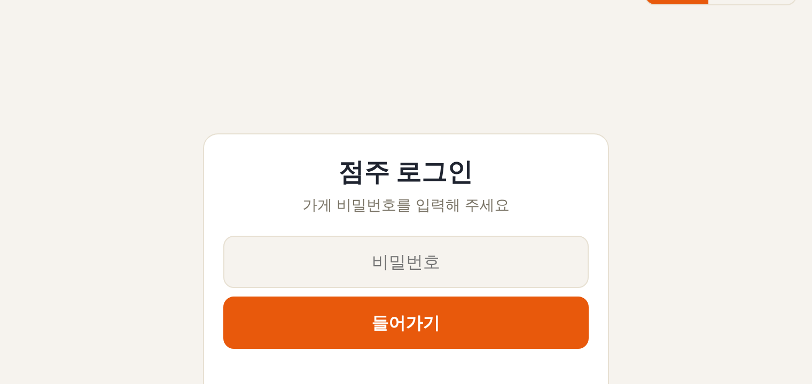
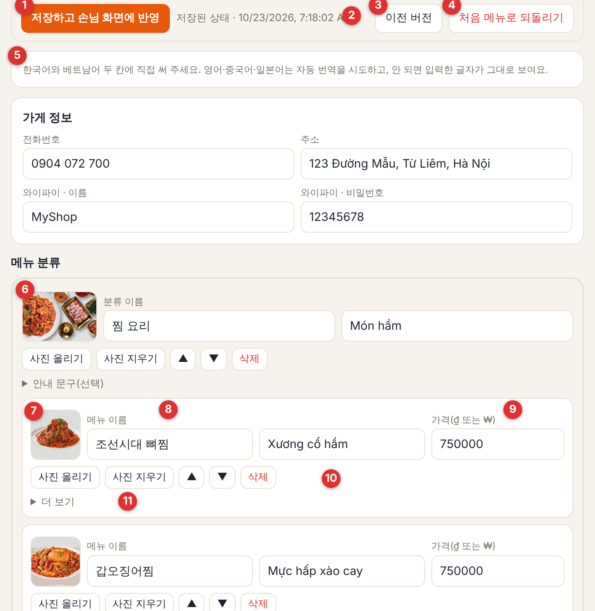
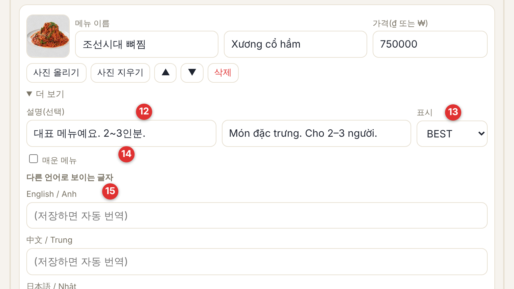

가격이 바뀌었나요? 신메뉴가 나왔나요? 전화하지 않아도 점주님 휴대폰·컴퓨터에서 바로 고칠 수 있어요. 저장하면 약 1분 안에 손님 화면이 바뀌어요.
qrmenuasia.com/owner/?shop=가게아이디메뉴 가격을 숫자만 고치면 끝. 크기별(소·중·대) 가격도 각각 고칠 수 있어요.
새 메뉴·새 분류를 만들고, 필요 없는 메뉴는 지우고, ▲▼로 순서를 바꿔요.
휴대폰 사진을 골라 올리면 알아서 크기를 줄여 줘요. 분류 배너 사진, 메뉴 옆 사진 모두 가능해요.
메뉴 설명을 적고 BEST·신메뉴·추천 표시와 매운 메뉴 표시를 붙여요.
전화번호·주소·와이파이를 바꿔요. 와이파이를 넣으면 손님 화면에 "복사" 버튼이 생겨요.
실수해도 괜찮아요. 이전에 저장한 버전으로, 또는 처음 메뉴로 되돌릴 수 있어요.

빨간 번호가 아래 설명의 번호예요. 모든 칸은 한국어·베트남어 두 칸에 직접 써 주세요.


| 하고 싶은 일 | 방법 |
|---|---|
| 가격 바꾸기 | 메뉴를 찾아 가격 칸(9)의 숫자를 고쳐요 → 맨 위 [저장하고 손님 화면에 반영](1). |
| 새 메뉴 넣기 | 그 분류 맨 아래 [+ 메뉴 추가] → 이름(한국어·베트남어)과 가격 입력 → 필요하면 [사진 올리기] → 저장. 이름이 비어 있는 메뉴는 저장할 때 빠져요. |
| 메뉴 지우기·순서 바꾸기 | 그 메뉴의 [삭제](확인 창에서 한 번 더) 또는 ▲▼ → 저장. |
| 새 분류 만들기 | 화면 맨 아래 [+ 분류 추가] → 분류 이름 입력 → 그 안에 [+ 메뉴 추가]. |
| 사진 올리기·바꾸기 | [사진 올리기] → 휴대폰 사진 선택(자동으로 줄여서 올라가요) → 저장. 지우려면 [사진 지우기]. |
| 신메뉴 알리기 | [더 보기] → 표시를 신메뉴로. 손님 화면에 NEW 표시가 붙어요. 인기 메뉴는 BEST, 추천 메뉴는 추천. |
| 오늘만 못 파는 메뉴 | [더 보기] 설명 칸에 "오늘 품절"처럼 적고 저장. 다시 팔 때 지우면 돼요. |
| 전화·주소·와이파이 | 맨 위 가게 정보 칸을 고치고 저장. 와이파이 이름·비밀번호를 넣으면 손님 화면 아래에 와이파이 복사 버튼이 생겨요. |
| 실수했을 때 | 저장 전이면 페이지를 새로 고침하면 처음 상태로 돌아가요. 저장했다면 [이전 버전](3)에서 되돌리거나 [처음 메뉴로 되돌리기](4). |
우리가 점주님께 전용 링크를 보내 드려요. 비밀번호 없이 열리고, 휴대폰에서도 보기 좋고, [인쇄 / PDF로 저장]도 돼요.
기간(기본 30일) 동안 몇 명이 메뉴판을 열었는지. 같은 분이 하루에 여러 번 열어도 1명으로 세요.
하루 평균 방문자와 가장 붐빈 날을 한눈에 볼 수 있어요.
요일·행사 뒤에 손님이 늘었는지 날마다 확인해요.
한국어·베트남어·영어·중국어·일본어 중 어떤 언어로 봤는지. 메뉴 번역을 챙길 때 참고해요.
휴대폰으로 본 손님과 컴퓨터로 본 손님의 비율.
테이블 QR을 찍고 왔는지, 가게 찾기·검색에서 왔는지. 우리 가게 방문은 기록하지 않도록 설정할 수 있어요.
사진 한 장만 보내 주셔도 돼요. 대신 고쳐 드릴 수도 있어요.